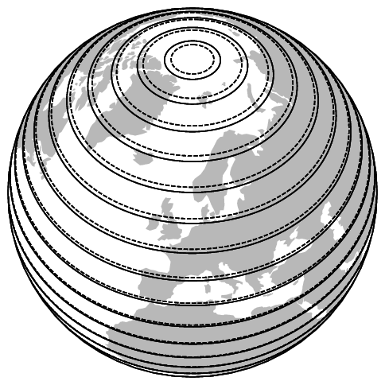
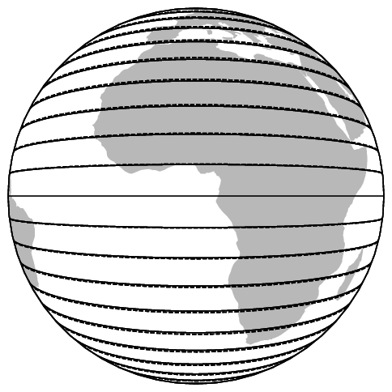
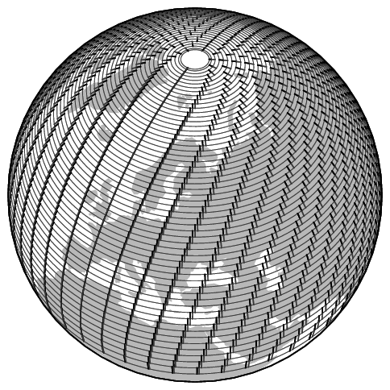
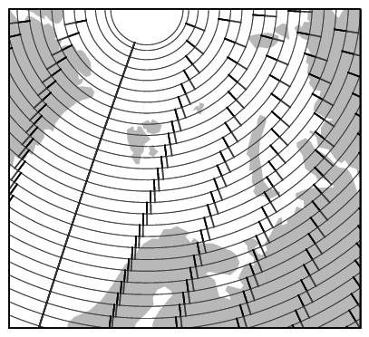

The aircraft airborne position message is used to broadcast the position and altitude of the aircraft. It has the Type Code 9–18 and 20–22. When Type Code is from 9 to 18, the encoded altitude represents the barometric altitude of the aircraft. When the Type Code is from 20 to 22, the encoded altitude contains the GNSS altitude of the aircraft. The Type Code value is related to the uncertainties in the position, which will be discussed in a later chapter.
The structure of the ADS-B airborne position message ME field is shown as follows:
+-------+-------+--------+---------+------+------+-------------+-------------+
| TC, 5 | SS, 2 | SAF, 1 | ALT, 12 | T, 1 | F, 1 | LAT-CPR, 17 | LON-CPR, 17 |
+-------+-------+--------+---------+------+------+-------------+-------------+There are eight fields, and the details of all fields are listed in Table 1.1.
| FIELD | MSG | ME | BITS | |
|---|---|---|---|---|
| Type Code | TC | 33–37 | 1–5 | 5 |
| 9–18: with barometric altitude | ||||
| 20–22: with GNSS altitude | ||||
| Surveillance status | SS | 38–39 | 6–7 | 2 |
| 0: No condition | ||||
| 1: Permanent alert | ||||
| 2: Temporary alert | ||||
| 3: SPI condition | ||||
| Single antenna flag | SAF | 40 | 8 | 1 |
| Encoded altitude | ALT | 41–52 | 9–20 | 12 |
| Time | T | 53 | 21 | 1 |
| CPR Format | F | 54 | 22 | 1 |
| 0: even frame | ||||
| 1: odd frame | ||||
| Encoded latitude | LAT-CPR | 55–71 | 23–39 | 17 |
| Encoded longitude | LON-CPR | 72–88 | 40–56 | 17 |
It is important to emphasize that the encoded latitude and longitude are not the actual latitude and longitude values. Instead, the position information is encoded in a Compact Position Reporting (CPR) format, which requires fewer bits to encode positions with higher resolution. The CPR offers a trade-off between global position ambiguity and local position accuracy. Two types of position messages (identified by the odd and even frame bit) are broadcast alternately. There are two different ways to decode an airborne position based on these messages:
Globally unambiguous position decoding: Without a known position to start with, using both types of messages to decode the position.
Locally unambiguous position decoding: Knowing a reference position from previous sets of messages, using only one message for the decoding.
First of all, we will use a simple example to explain the basic ideas behind the CPR position encoding. CPR divides 2D space into two different grids. Two message types are used to encode the positions with different grids.
In the following simple example, we want to encode position \((9, 7)\) in a \(16\times16\) discrete world. Normally, this would require four bits each to encode the \(x\) and \(y\) coordinates, which is \((1001, 0111)\).
For this simplified algorithm, we first define two different grids. The even grid has a size of \(4\times4\), while the odd grid has a size of \(5\times5\). This is illustrated in Figure 1.1.
With these two grids, we can encode the local positions within each grid systems, which are \((1,3)\) and \((4,2)\), respectively. Now, the position can be encoded only using three bits.
When the odd and even messages are received, each message alone has different possible global positions, which are shown in Figure 1.2.
Combining the possible positions from both even and odd messages, we can recover the global position where the solutions from both grids overlap with each other. This is shown in Figure 1.3.
The actual CPR algorithm is more sophisticated. First of all, more zones are defined. There are 15 latitude zones defined for each hemisphere. Up to 59 longitude zones are used, and the number of longitude zones is different at different altitudes.
Figure 1.5 illustrates the latitude zones. The solid and dashed lines represent the latitude zone size of even and odd messages.


Figure 1.7 illustrates the latitude zones. The second plot of the figure is a zoomed-in view of the grid of northern Europe. The black and gray lines represent the longitude zone size of even and odd messages respectively. We can see that the number of longitude zones (and the sizes) also differs depending on the latitude.


To report a position, the fractions of latitude and longitude in the respective zones are encoded using 17 bits. These bits are transmitted in the position messages.
To decode the CPR positions, we first introduce relevant parameters and common functions.
\(N_Z\) represents the number of latitude zones between the equator and a pole. In Mode S, \(N_Z\) is defined to be 15.
The floor function \(floor(x)\) returns the greatest integer value \(k\), where \(k \le x\). For example:
\[\begin{split} floor(5.6) &= 5 \\ floor(-5.6) &= -6 \end{split}\]
The modulo function is defined as:
\[mod(x,y) = x - y \cdot floor \left( \frac{x}{y} \right), \qquad y \ne 0\]
Given the latitude, this function yields the number of longitude zones between 1 and 59. The function is expressed as:
\[\mathrm{NL}(\mathrm{lat}) = floor \left\{ \dfrac{2 \pi}{\arccos \left[ 1 - \dfrac{1-\cos \left( \dfrac{\pi}{2~N_Z} \right)}{\cos^2\left(\dfrac{\pi}{180} \cdot \mathrm{lat} \right)} \right] } \right\}\]
For latitudes that are close to the equator or the poles, the following values are used:
lat = 0 -> NL = 59
lat = +87 -> NL = 2
lat = -87 -> NL = 2
lat > +87 -> NL = 1
lat < -87 -> NL = 1In each position message, bit 54 determines whether it is an odd or even frame. indicates an even message, while indicates an odd message.
Bits 55–71 and bits 72–88 represent the fractions of the latitude and longitude within the latitude and longitude grid, denoted as \(\mathrm{lat}_\mathrm{cpr}\) and \(\mathrm{lon}_\mathrm{cpr}\):
\[\begin{split} \mathrm{lat}_\mathrm{cpr} &= \frac{N_{cpr,lat}}{2^{17}} \\ \mathrm{lon}_\mathrm{cpr} &= \frac{N_{cpr,lon}}{2^{17}} \end{split}\]
For even and odd messages, the latitude zone sizes are defined as follows:
\[\begin{split} \mathrm{dLat}_\mathrm{even} &= \frac{360^\circ}{4 N_Z} \\ \mathrm{dLat}_\mathrm{odd} &= \frac{360^\circ}{4 N_Z - 1} \end{split}\]
To decode the latitude, first, use the following equation to calculate the latitude zone index, denoted as \(j\):
\[j = floor \left( 59 \cdot \mathrm{lat}_\mathrm{cpr, even} - 60 \cdot \mathrm{lat}_\mathrm{cpr,odd} + \frac{1}{2} \right)\]
Based on both even and odd frames, two latitudes are computed as follows:
\[\begin{split} \mathrm{lat}_\mathrm{even} &= \mathrm{dLat}_\mathrm{even} \Big( mod(j, 60) + \mathrm{lat}_\mathrm{cpr, even} \Big) \\ \mathrm{lat}_\mathrm{odd} &= \mathrm{dLat}_\mathrm{odd} \Big( mod(j, 59) + \mathrm{lat}_\mathrm{cpr,odd} \Big) \end{split}\]
For the southern hemisphere, values returned from previous equations range from 270 to 360 degrees. Hence, we need to make sure the latitude is within the range of \([-90, +90]\) by applying the following equations:
\[\begin{split} \mathrm{lat}_\mathrm{even} = \mathrm{lat}_\mathrm{even} - 360, \quad &\text{if}~\mathrm{lat}_\mathrm{even} \ge 270 \\ \mathrm{lat}_\mathrm{odd} = \mathrm{lat}_\mathrm{odd} - 360, \quad &\text{if}~\mathrm{lat}_\mathrm{odd} \ge 270 \end{split}\]
Before proceeding to the longitude calculation, we need to compute \(\mathrm{NL}(\mathrm{lat}_\mathrm{even})\) and \(\mathrm{NL}(\mathrm{lat}_\mathrm{odd})\) to check if both values are the same. If not, this means the pair of messages are from different longitude zones, and it is not possible to compute the correct global position.
In this case, decoding should be stopped, and it is necessary to wait for a pair of messages that are from the same latitude zone. This situation happens when aircraft are flying across the boundaries of longitude zones.
The final latitude is chosen according to the time stamps of the messages as:
\[\mathrm{lat} = \begin{cases} \mathrm{lat}_\mathrm{even} & \text{if}~T_\mathrm{even} \ge T_\mathrm{odd} \\ \mathrm{lat}_\mathrm{odd} & \text{otherwise} \end{cases}\]
where the current latitude is the more recent of these two latitudes.
First, the longitude index, \(m\), can be calculated as:
\[m = floor \left( \mathrm{lon}_\mathrm{cpr, even} \cdot \Big[ \mathrm{NL}(\mathrm{lat})-1 \Big] - \mathrm{lon}_\mathrm{cpr,odd} \cdot \mathrm{NL}(\mathrm{lat}) + \frac{1}{2} \right)\]
We also need to calculate the longitude zone size, which is dependent on the latitude. For even and odd messages, the number of longitude zones is defined as:
\[\begin{split} n_\mathrm{even} &= max[\mathrm{NL}(\mathrm{lat}), 1] \\ n_\mathrm{odd} &= max[\mathrm{NL}(\mathrm{lat}-1), 1] \end{split}\]
The longitude zone sizes are defined as follows:
\[\begin{split} \mathrm{dLon}_\mathrm{even} &= \frac{360^\circ}{n_\mathrm{even}} \\ \mathrm{dLon}_\mathrm{odd} &= \frac{360^\circ}{n_\mathrm{odd}} \end{split}\]
Then, the longitude is calculated as:
\[\begin{split} \mathrm{lon}_\mathrm{even} &= \mathrm{dLon}_\mathrm{even} \Big[ mod(m, n_\mathrm{even}) + \mathrm{lon}_\mathrm{cpr,even} \Big] \\ \mathrm{lon}_\mathrm{odd} &= \mathrm{dLon}_\mathrm{odd} \Big[ mod(m, n_\mathrm{odd}) + \mathrm{lon}_\mathrm{cpr,odd} \Big] \end{split}\]
Similarly, the final longitude is chosen according to the timestamps of the messages as:
\[\mathrm{lon} = \begin{cases} \mathrm{lon}_\mathrm{even} & \text{if}~T_\mathrm{even} \ge T_\mathrm{odd} \\ \mathrm{lon}_\mathrm{odd} & \text{otherwise} \end{cases}\]
It is worth noting that the longitudes in position messages are between 0 and 360 degrees. We often need to convert them to the range between -180 and 180 degrees, which is consistent with aviation conventions. We can convert them as:
\[\mathrm{lon} = \mathrm{lon} - 360, \quad \text{if}~\mathrm{lon} \ge 180.\]
The example contains two position messages that are received within 10 seconds. The first message is the most recent position message transmitted by the aircraft.
8D40621D58C382D690C8AC2863A7 (most recent)
8D40621D58C386435CC412692AD6Following the common ADS-B message structure, we can identify the ICAO address and ME field as follows:
+----+--------+----------------+--------+
| | ICAO | ME | PI |
+----+--------+----------------+--------+
| 8D | 40621D | 58C382D690C8AC | 2863A7 |
| 8D | 40621D | 58C386435CC412 | 692AD6 |
+----+--------+----------------+--------+We can covert the message data into binary format:
+-------+-----+--------------+---+---+-------------------+-------------------+
| TC | | ALT | T | F | CPR-LAT | CPR-LON |
+-------+-----+--------------+---+---+-------------------+-------------------+
| 01011 | 000 | 110000111000 | 0 | 0 | 10110101101001000 | 01100100010101100 |
| 01011 | 000 | 110000111000 | 0 | 1 | 10010000110101110 | 01100010000010010 |
+-------+-----+--------------+---+---+-------------------+-------------------+It is possible to extract the encoded CPR latitude and longitude binary and convert them to decimal format. Then, these values are divided by the \(2^{17}\), representing the fractions of the positions within the latitude and longitude grids:
\[\begin{split} \mathrm{lat}_\mathrm{cpr,even} &= \frac{93000}{2^{17}} \\ \mathrm{lon}_\mathrm{cpr,even} &= \frac{51372}{2^{17}} \\ \mathrm{lat}_\mathrm{cpr,odd} &= \frac{74158}{2^{17}} \\ \mathrm{lon}_\mathrm{cpr,odd} &= \frac{50194}{2^{17}} \end{split}\]
We can calculate the latitude index, \(j\), as:
\[j = floor \left( 59 \times \frac{93000}{2^{17}} - 60 \times \frac{51372}{2^{17}} + \frac{1}{2} \right) = 8\]
Then, we can decode the latitudes from both even and odd messages:
\[\begin{split} \mathrm{lat}_\mathrm{even} &= \frac{360}{4 \times 15} \Big[ mod(8, 60) + \frac{93000}{2^{17}} \Big] = 52.25720214843750 \\ \mathrm{lat}_\mathrm{odd} &= \frac{360}{4 \times 15 - 1} \Big[ mod(8, 59) + \frac{74158}{2^{17}} \Big] = 52.26578017412606 \end{split}\]
After validating the longitude zone of both messages:
\[\begin{split} \mathrm{NL}(\mathrm{lat}_\mathrm{even}) &= \mathrm{NL}(52.25720214843750) = 36 \\ \mathrm{NL}(\mathrm{lat}_\mathrm{odd}) &= \mathrm{NL}(52.26578017412606) = 36 \end{split}\]
we can continue to calculate the global position. Since the even message is the most recent message, the latitude is:
\[\mathrm{lat} = \mathrm{lat}_\mathrm{even} = 52.25720214843750\]
The final longitude (based on the even message) is calculated as:
\[\begin{aligned} m &= floor \left( \frac{51372}{2^{17}} \times (36-1) - \frac{50194}{2^{17}} \times 36 + \frac{1}{2} \right) = 0\\ n &= max \Big( 36-0, 1 \Big) = 36\\ \mathrm{lon} &= \frac{360}{36} \Big[ mod(0, 36) + \frac{51372}{2^{17}} \Big] = 3.91937255859375\end{aligned}\]
Try it out Using pyModeS, we can perform the previous calculation of globally unambiguous position as:
import pyModeS as pms
msg0 = "8D40621D58C382D690C8AC2863A7"
msg1 = "8D40621D58C386435CC412692AD6"
t0 = 1457996402
t1 = 1457996400
pms.adsb.position(msg0, msg1, t0, t1)Output:
(52.2572, 3.91937)Previously, a globally unambiguous position was decoded using a pair of odd and even messages. This section explains how to decode the ADS-B position with one message and a previous reference position that is obtained using globally unambiguous decoding.
This method offers the possibility to continuous decode aircraft using only one message. It computes the latitude index (\(j\)) and the longitude index (\(m\)) based on this existing reference position and can be applied to both odd and even messages.
The reference position should be close to the actual position, which must be within a 180 NM range. For example, this can be the position of the aircraft that has been decoded in the previous update.1
The range limitation is to ensure the consistency of the latitude and longitude zones between the reference position and the decoding position. The reference position is denoted as (\(\mathrm{lat}_\mathrm{ref}\), \(\mathrm{lon}_\mathrm{ref}\)).
Denote \(i\) as the value dependent on the type of the message:
\[i = \begin{cases} 0, \quad \text{even message} \\ 1, \quad \text{odd message} \end{cases}\]
The latitude zone size is different depending on the message type:
\[\mathrm{dLat} = \frac{360}{4n_z-i}\]
Then, the latitude zone index, \(j\), is calculated as:
\[j = floor \left( \frac{\mathrm{lat}_\mathrm{ref}}{\mathrm{dLat}} \right) + floor \left[ \frac{mod(\mathrm{lat}_\mathrm{ref}, \mathrm{dLat})}{\mathrm{dLat}} - \mathrm{lat}_\mathrm{cpr} + \frac{1}{2} \right]\]
Knowing the latitude zone index, the latitude of the new position is:
\[\mathrm{lat} = \mathrm{dLat} \cdot (j + \mathrm{lat}_\mathrm{cpr})\]
Next, we can calculate the increment of the longitude per zone based on the decoded latitude, which is dependent on both message type and latitude:
\[\mathrm{dLon} = \frac{360}{max\Big( \mathrm{NL}(\mathrm{lat})-i, 1 \Big)}\]
Then, the longitude zone index, \(m\), is calculated as:
\[m = floor \left( \frac{\mathrm{lon}_\mathrm{ref}}{\mathrm{dLon}} \right) + floor \left( \frac{mod(\mathrm{lon}_\mathrm{ref}, \mathrm{dLon})}{\mathrm{dLon}} - \mathrm{lon}_\mathrm{cpr} + \frac{1}{2} \right)\]
Knowing the longitude zone index, the longitude of the new position is:
\[\mathrm{lon} = \mathrm{dLon} \cdot (m + \mathrm{lon}_\mathrm{cpr})\]
Next, we illustrate the decoding process of the messages from the previous example with a reference position. The message is:
Message: 8D40621D58C382D690C8AC2863A7
ME (data): 58C382D690C8ACThe reference position we will use is:
(52.258, 3.918)We can easily convert the message data to binary format as:
+-------+-----+--------------+-----------------------------------------------+
| TC | | ALT | T | F | CPR-LAT | CPR-LON |
|-------+-----+--------------+---+---+-------------------+-------------------|
| 01011 | 000 | 110000111000 | 0 | 0 | 10110101101001000 | 01100100010101100 |
+-------+-----+--------------+---+---+-------------------+-------------------+
| | | | | | 93000 | 51372 |
+-------+-----+--------------+---+---+-------------------+-------------------+Since this is an even message (\(i=0\)), we can calculate dLat and latitude index (\(j\)) as follows:
\[\begin{aligned} \mathrm{dLat} &= \frac{360}{4 \times 15 - 0} = 6 \\ j &= floor \left( \frac{52.258}{6} \right) + floor \left[ \frac{mod(52.258, 6)}{6} - \frac{93000}{2^{17}} + \frac{1}{2} \right] = 8 \\\end{aligned}\]
The latitude can be obtained as:
\[\mathrm{lat} = 6 \times \left( 8 + \frac{93000}{2^{17}} \right) = 52.2572021484375\]
Next, we can calculate dLon and longitude index (\(m\)) as:
\[\begin{aligned} \mathrm{dLon} &= \frac{360}{max \Big( \mathrm{NL}(\mathrm{lat}_\mathrm{even})-0, 1 \Big)} = \frac{360}{max(36, 1)} = 10 \\ m &= floor \left( \frac{3.918}{10} \right) + floor \left( \frac{mod(3.918, 10)}{10} - \frac{51372}{2^{17}} + \frac{1}{2} \right) = 0 \\\end{aligned}\]
Finally, the aircraft longitude is:
\[\mathrm{lon} = 10 \times \left(0 + \frac{51372}{2^{17}} \right) = 3.91937255859375\]
Try it out Using pyModeS, we can perform the previous locally unambiguous position calculation as:
import pyModeS as pms
msg = "8D40621D58C382D690C8AC2863A7"
lat_ref = 52.258
lon_ref = 3.918
pms.adsb.position_with_ref(msg, lat_ref, lon_ref)Output:
(52.2572, 3.91937)The altitude of the aircraft can be decoded with one position message, regardless of it being an even or odd type. However, depending on the type code of the messages, the altitudes are decoded differently. Table [tb:adsb-tc] from Chapter [chap:adsb-basic] shows two different types of altitudes. They are:
TC=9–18: Airborne position, with barometric altitude encoded (in feet)
TC=20–22: Airborne position, with GNSS Height encoded (in meters)
For barometric altitude (TC between 9 and 18), the 8th bit of the 12-bit altitude field is the Q bit. It indicates whether the altitude is encoded with an increment of 25 feet or 100 feet.
When \(Q=1\), the altitude is encoded with a 25 feet increment. Removing the Q-bit, the altitude shall be the multiple of 25 feet minus 1000 feet:
\[h = 25 ~ N - 1000 \quad \text{(ft)}\]
For example, based the example message in the previous section, the 12 bits in the altitude field can be read as follows:
1100001 1 1000
^
Q-bitOnce the Q-bit is removed, the decimal representation of the remaining bits is 1560:
11000011000 -> 1560The altitude of the aircraft becomes:
\[1560 \times 25 - 1000 = 38000 \quad \text{(ft)}\]
In the case where the altitude is higher than 50175 feet, a 100 feet increment is used. In this situation, the Q bit is set to , and the rest of the bits are encoded using Gray code .
It is worth noting that it is possible for all altitude bits to be zeros,which indicates that the altitude information is not available.
When the position message has the Type Code from 20 to 22, the 12-bit altitude field is used for the encoding of the GNSS height. The GNSS height is derived from the global positioning satellites, and the decimal value of all 12 bits translates into the height of aircraft in meters.2
Try it out Using pyModeS, we can perform the altitude decoding as:
import pyModeS as pms
msg = "8D40621D58C382D690C8AC2863A7"
pms.adsb.altitude(msg)Output (altitude in feet):
38000The CPR decoding algorithm does not guarantee the correct decoding of all positions. In rare cases, wrong positions can be calculated.
It is recommended to perform a so-called reasonable test to validate the decoded position. There are a couple of ways to perform such test to examine the plausibility of decoded positions:
The first approach is to use the receiver position. The decoded position should not exceed the coverage of the receiver. See Chapter [chap:quickstart], Figure [fig:max_range_curve].
A further test is to use more than one pair of different messages to produce multiple globally unambiguous positions. Then, the distance between these positions can be used to examine whether the decoded positions are reasonable.
If the decoded position fails the reasonable tests, it should be discarded.